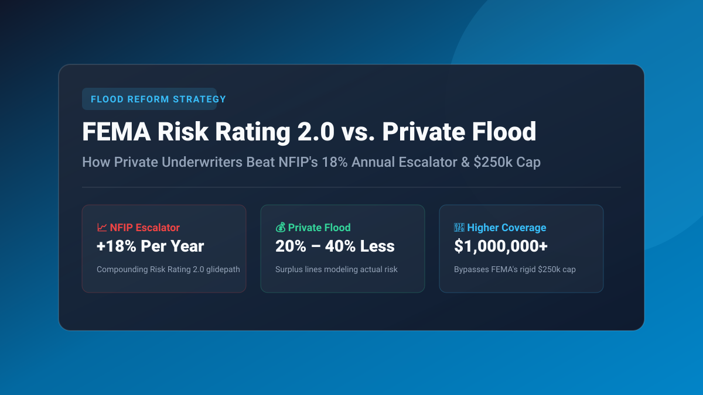

Key Takeaways at a Glance
- The 18% Escalator: FEMA's Risk Rating 2.0 algorithm automatically compounds premiums by up to 18% per year until properties reach full actuarial rates (often $4,000–$8,000+/year).
- FEMA Coverage Caps: The National Flood Insurance Program (NFIP) statutorily caps coverage at $250,000 for dwelling and $100,000 for contents, leaving modern homes severely underinsured.
- The Private Advantage: Private flood insurers offer coverage up to $2,000,000+, include loss of use (temporary rent during repairs), and frequently cost 20% to 40% less.
- Waiting Period Arbitrage: FEMA imposes a mandatory 30-day waiting period before a policy becomes active. Private flood insurers offer waiting periods as short as 7 to 14 days.

Estimate Total Home & Storm Rebuild Costs
Calculate your dwelling reconstruction overhead and see how water risk impact changes your baseline property rate with our Homeowners Insurance Calculator.
- 1. How FEMA Risk Rating 2.0 Works: The Death of Binary Flood Zones
- 2. The 18% Annual Glidepath: Compounding Rate Shock
- 3. Direct Comparison: FEMA NFIP vs. Private Flood Insurance
- 4. How Private Insurers Price Risk: LIDAR, Distance & Elevation
- 5. Will Your Mortgage Bank Accept Private Flood? Federal Rule Explained
- Frequently Asked Questions
1. How FEMA Risk Rating 2.0 Works: The Death of Binary Flood Zones
For nearly five decades, the National Flood Insurance Program (NFIP) set flood insurance premiums using simplified Flood Insurance Rate Maps (FIRMs). If your house was inside a high-risk Special Flood Hazard Area (Zone AE or VE), you paid an elevated flat rate; if you were outside in Zone X, you qualified for a subsidized Preferred Risk Policy (PRP) for under $500 per year.
In 2021, FEMA dismantled this binary system and launched Risk Rating 2.0: Equity in Action. Under this actuarial model, premiums are calculated using structural variables unique to each property:
- Distance to Flooding Source: Exact footage to the nearest coastline, river, stream, or drainage canal.
- Elevation of the Lowest Living Floor: Measured against the 100-year base flood elevation (BFE).
- Foundation Construction: Slab-on-grade, crawlspace with vents, elevated pilings, or full basement.
- Structural Rebuild Cost: Ensuring that high-value coastal estates pay proportionally more than modest inland ranch homes.
2. The 18% Annual Glidepath: Compounding Rate Shock
Risk Rating 2.0 revealed that millions of US homes had been paying premiums far below their true actuarial loss probability. However, because federal statute caps annual rate hikes on primary residences at 18%, FEMA cannot raise your bill overnight from $800 to $4,500.
Instead, underpriced homeowners enter an 18% annual compounding glidepath. An $800 policy compounding at 18% annually climbs to $1,830 in year 5, and surpasses $4,300 in year 10. For many middle-class families in Louisiana, Florida, New Jersey, and Texas, this escalator threatens home affordability and mortgage escrow payments.
3. Direct Comparison: FEMA NFIP vs. Private Flood Insurance
| Policy Feature | FEMA NFIP Standard Policy | Private Flood Market (Surplus/Admitted) |
|---|---|---|
| Dwelling Coverage Limit (Cov A) | Statutory Cap: $250,000 | Up to $2,000,000 – $5,000,000+ |
| Personal Contents Limit (Cov C) | Statutory Cap: $100,000 (ACV only) | Up to $500,000 – $1,000,000 (Replacement Cost) |
| Additional Living Expenses (Loss of Use) | $0 (Strictly Excluded) | $25,000 – $100,000 Included (Hotel & rent) |
| Basement & Ground-Floor Contents | Severely limited (Furnace/dryer only) | Full finished basement coverage available |
| Waiting Period | 30 Days (Except for loan closings) | 7 to 14 Days (Instant for closings) |
4. How Private Insurers Price Risk: LIDAR, Distance & Elevation
Why can private flood underwriters (such as Neptune, Palomar, Beyond Floods, and Hiscox) often charge 25% to 40% less than FEMA?
FEMA uses a nationwide model designed to balance political mandates across all 50 states. Private insurers utilize hyper-localized 3D LIDAR topographic scanning, advanced hydrodynamic storm surge modeling, and real-time precipitation sensors. If your home sits on an elevated knoll just 4 feet higher than your neighbor's driveway, private algorithms immediately credit you with a dramatic discount, whereas FEMA's grid-level assumptions may lump both parcels together.
5. Will Your Mortgage Bank Accept Private Flood? Federal Rule Explained
A common myth is that banks only accept federal FEMA flood policies. In February 2019, five federal financial regulatory agencies (including the FDIC, Federal Reserve Board, and OCC) enacted a mandatory rule requiring mortgage servicers to accept private flood insurance.
To satisfy Fannie Mae and Freddie Mac guidelines, the private policy declarations page must contain the following statutory endorsement clause: "This policy meets the definition of private flood insurance contained in 42 U.S.C. 4012a(b)(7) and the corresponding regulation." Always confirm this clause with your insurance broker before submitting the policy binder to your mortgage closing officer.
Frequently Asked Questions
Why are FEMA flood insurance rates increasing by 18% every year?
Under federal law (BW-12 and HFIAA), FEMA is required to phase out taxpayer flood subsidies under Risk Rating 2.0. To reach true actuarial risk without shocking consumers in a single bill, rates for underpriced properties increase by the statutory maximum cap of 18% annually until full actuarial pricing is reached.
Is private flood insurance cheaper than FEMA NFIP?
In many geographic regions, yes. Private flood insurers use sophisticated micro-elevation models and proprietary actuarial algorithms, frequently pricing policies 20% to 40% lower than FEMA for low-to-moderate risk properties.
Do mortgage companies accept private flood insurance?
Yes. Under federal lending regulations finalized in 2019, federally regulated lenders (including Fannie Mae, Freddie Mac, FHA, and VA) are legally required to accept private flood insurance if the policy meets the statutory definition of continuous coverage.